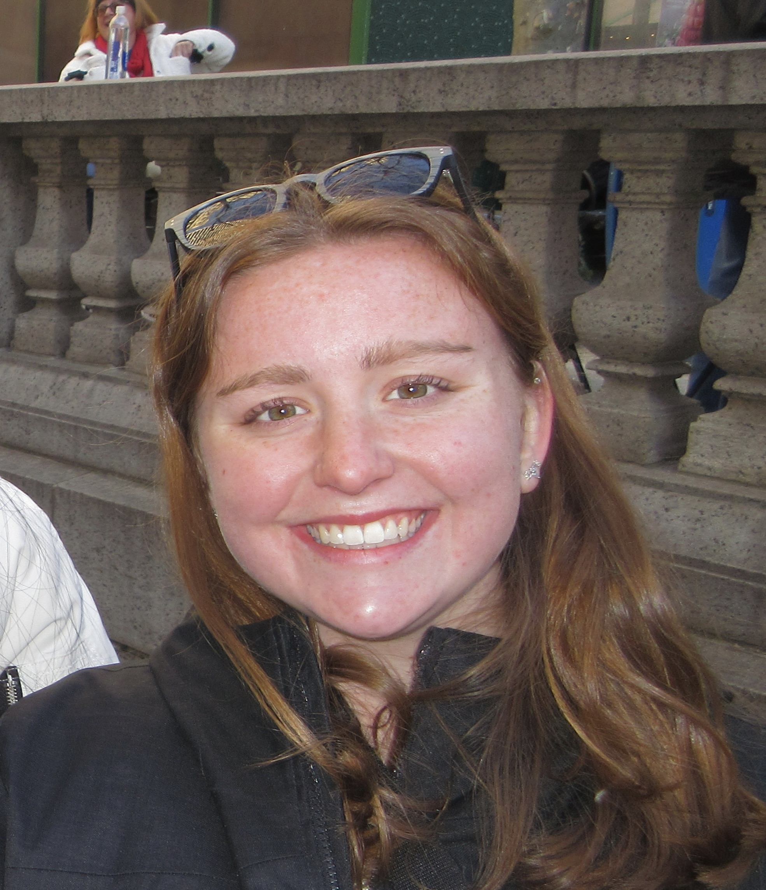

About me:
Erin Fels is a Junior at the University of Colorado, Boulder. She is studying
Creative Technology and Design and Computer Science with a minor in Business. Erin is interested in themed
entertainment and immersive technologies. She is also the current Vice-President and past social media chair
for CU’s new Themed Park Engineering and Design Club, where she has competed in the Ride Engineering
Competition and Toronto Metropolitan Thrill Design Competition Qualifier and a member of CU’s Engineering
Honor Society, Tau Beta Pi. Erin works as a CTD Ambassador and Learning Assistant for a physical computing
class, Object, for Creative Technology and Design at the Atlas Institute. She spent her past summer as a
Design and Programming Intern at Image Engineering working on live special effect shows. Erin is a
hardworking and receptive person. Her goals in the future are to work at a themed entertainment company that
creates exciting experiences.